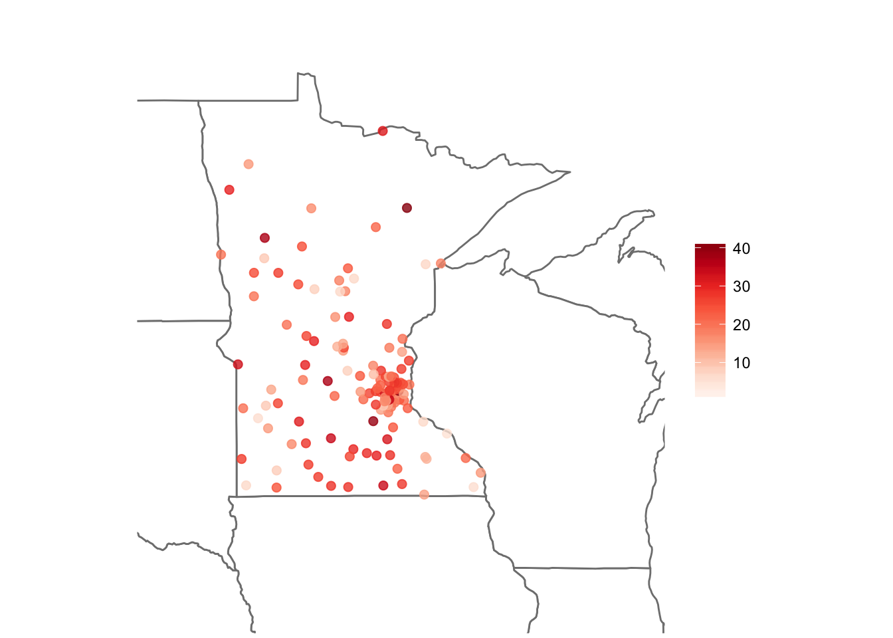

Analysis
Vendors
Of the 265 vendors used by practitioners in our dataset, we found that 58.5% of the products used were from the top 10 most popular vendors.

We can see that the most popular vendors are used very popularly in Minnesota, but in New York, Tennessee, Rhode Island, and Nevada.
Interestingly, there tend to be younger (more recently trained) practitioners in Minnesota compared to the rest of the United States.

** add product setting graphs? **
Phys

Using Association Rule Learning, we found that the strongest associations exist between practitioners with the following characteristics:
- Using 5 EHR products across 2 different vendors in the state of Minnesota
- Using 7 EHR products across 2 different vendors in the state of California
## # A tibble: 66 x 2
## Primary.specialty num
## <fctr> <int>
## 1 OPTOMETRY 5939
## 2 CHIROPRACTIC 4278
## 3 DERMATOLOGY 2970
## 4 OPHTHALMOLOGY 2359
## 5 FAMILY PRACTICE 1996
## 6 INTERNAL MEDICINE 1375
## 7 OBSTETRICS/GYNECOLOGY 877
## 8 PODIATRY 847
## 9 PSYCHIATRY 740
## 10 NEUROLOGY 558
## # ... with 56 more rowsHosp
- size of hospital influences all other hospital variables, so it is a confounder
- female proportion has the strongest correlation to years since graduation?
- 2 most strongly correlated variables = # phys and gross patient rev?
- stratifying by gross patient revenue in GLM, the only significant = # phys